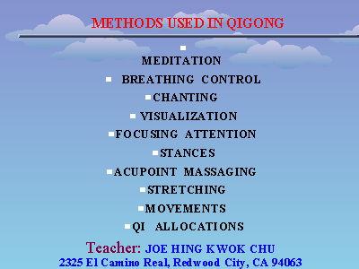

METHODS USED IN QIGONG
Slide 5 of 25

Go to slide:
1: MEDICAL USES OF QIGONG
2: TEACHING EXPERIENCE OF JOE H.K. CHU
3: EDUCATION BACKGROUND
4: What is Qigong?
5: METHODS USED IN QIGONG
6: SOURCES OF QIGONG
7: QIGONG & TRADITIONAL CHINESE MEDICINE
8: COMPARING NORMAL , YINXU, YANGXU GROUPS
9: YINXU GROUP & YANGXU GROUP ,BEFORE & AFTER QIGONG THERAPY
10: QIGONG & CAPILLARY CIRCULATION
11: CARDIAC FUNCTION AFTER ONE YEAR OF QIGONG
12: SHENYINXU, MOOD SWING, & STAGNATION OF QI / BLOOD
13: MING MEN LACKS FIRE & STAGNATION OF QI / BLOOD
14: PROLACTIN, MOOD SWING, & STAGNATION OF QI / BLOOD
15: MIGRAINE, MOOD SWING, & STAGNATION OF QI / BLOOD
16: (Untitled)
17: ASTHMA VICIOUS CYCLE
18: SHENYANGXU ASTHMA SUFFERERS
19: SHENYINXU ASTHMA SUFFERERS
20: SHENYINXU & SHENYANGXU ASTHMA SUFFERERS
21: Shenyangxu -Biological View
22: Biological Explanation of Shenyinxu
23: 17-KS OF SHENYANGXU PATIENTS
24: 17-KS OF SHENYINXU WITH SHENYANGXU PATIENTS
25: 17-KS OF SHENYINXU ASTHMA SUFFERERS